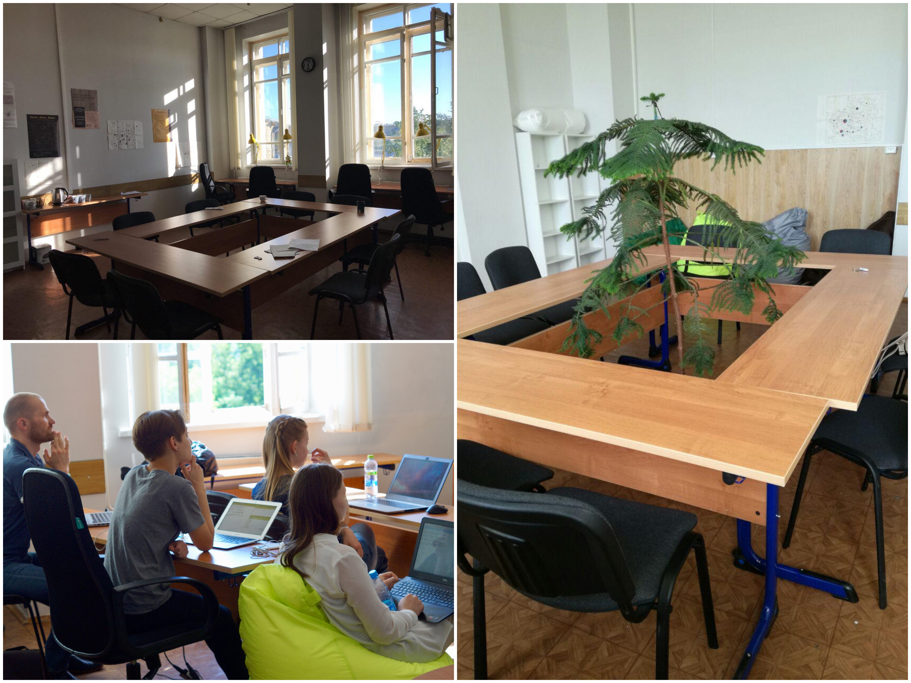

Digital humanities часто бранят за упрощенчество, редукционизм, механистический перенос методов из естественных или социальных наук, недостаточную методологическую строгость. Особенно часто (и справедливо!) критикуется подход «мы сейчас что-нибудь посчитаем, а потом поймём, что с этим делать»... Новый выпуск «Вестника» — о том, что эти «болезни роста» digital humanities теперь осознают сами цифровые гуманитарии. Осознают — и думают о путях исправления. Желание «взболтать» застоявшуюся традиционную гуманитаристику цифровыми методами теперь уравновешивается стремлением «не смешивать» теплое с мягким, то есть избавиться от явно искусственных аналогий и механистических сравнений, а главное — вернуться к строгим стандартам эмпирического исследования: с первичным определением исследовательской задачи, гипотезы и условий эксперимента.
В свежем номере «Нового мира» филологи Борис Орехов и Павел Успенский взбалтывают (и даже на время смешивают, но затем эффектно разделяют) поэзию настоящую — и нейросетевую. Это исследование — пример филологического эксперимента, явления в этой науке по-прежнему крайне редкого. Причем эксперимента с четкой постановкой гипотезы и прозрачными критериями оценки результата.
Суть опыта такова: филологу предлагается оценить «два поэтических текста: малоизвестное стихотворение автора первой четверти XX века и компьютерное произведение, сгенерированное при помощи нейронных сетей». Нейросеть обучена на корпусе русской поэзии 1900-1930 годов и, как следует из приведенных в статье примеров, достаточно успешно имитирует авангардно-футуристические стихи. Подопытный литературовед не знает, какое из стихотворений создано искусственно, а основная его задача — «реконструировать и описать концептуальную рамку текстов». Гипотеза авторов статьи состояла в том, что «для стихотворения “естественного” происхождения это будет сделать легче, чем для компьютерного».
Самое примечательное, что во время чтения статьи тому же эксперименту неизбежно подвергается читатель. Следя за рассуждениями литературоведа о «стихотворении А» и «стихотворении Б», он тоже не знает, какой из двух текстов — плод работы «бездушной машины». Экспериментаторы сохраняют саспенс до самого конца, позволяя читателю «соучаствовать» в исследовании — и в конечном счете дать собственный ответ на открытый вопрос, которым завершается статья: «что на самом деле важнее — воспринимаемые и переживаемые читателем смыслы или призрачная фигура автора».
Франко Моретти — безусловно, один из главных визионеров и «идеологов» современных digital humanities — раз за разом оставался вне фокуса нашей рассылки. К счастью, на этот раз от обсуждения уже не уклониться: большая дискуссия о «Дальнем чтении», подготовленная Олегом Собчуком и Артемом Шелей, стала ядром нового номера НЛО.
«Книга Франко Моретти написана как будто специально для того, чтобы вызывать споры» — этот посыл статьи составителей подхватывают все участники обсуждения. «Дальнее чтение» здесь получает очень серьезную порцию критики за некорректную методологию, вольности в интерпретации, приравнивание корреляции к причинно-следственным связям, спекулятивность и другие научные грехи, а принципиальная новизна Стэнфордского «количественного формализма» оспаривается (конечно, ссылками на Ярхо/Томашевского и сетованиями на незнакомство зарубежных исследователей с квантитативной ветвью русского формализма).
Дискуссия одновременно идет вокруг
Спектр мнений делится на более и менее критические, однако ценна сама тональность дискуссии. Научность и методологическая корректность «Дальнего чтения» подвергаются здесь пристальному анализу без всяких скидок и почтения к авторитету — и, может быть, как раз в этом залог выживания гуманитариев «в период турбулентных перемен», когда, согласно одной из альтернатив в прогнозе А. Шели и О. Собчука, общество может даже и пожертвовать «гуманитарными науками в пользу наук более прикладных и более захватывающих».
В общем, эту дискуссию стоит прочитать целиком — коктейль из мнений взболтан замечательно, авторы не смешиваются в унисоне, но создают многостороннее многоголосие.
После официального открытия дверей, о котором мы рассыказывали в прошлой рассылке, наш Центр начал жить насыщенной жизнью: мы проводим открытые презентации исследований, устраиваем тьюториалы, принимаем разнообразных гостей. В связи с этим мы зовем всех желающих заходить по пятницам к нам на Старую Басманную и общаться с нами лично! Вы можете рассказать нам про свой проект, поспрашивать про наши — и, может быть, мы придумаем сотрудничество. Пока поток наших гостей хаотичен и неупорядочен, поэтому лучше написать о вашем визите немного заранее, чтобы мы были готовы (и заказали пропуск). А вообще у нас мило:
Приходите болтать — и смешиваться ;)
Последний на сегодня приятный коктейль — курс Introduction to Digital Humanities в UCLA. По ссылке — 119-страничный Course Book, по сути — полноценный учебник Digital Humanities вводного уровня. В списке тем — разметка, сети, карты, визуализация, базы данных и много что еще.